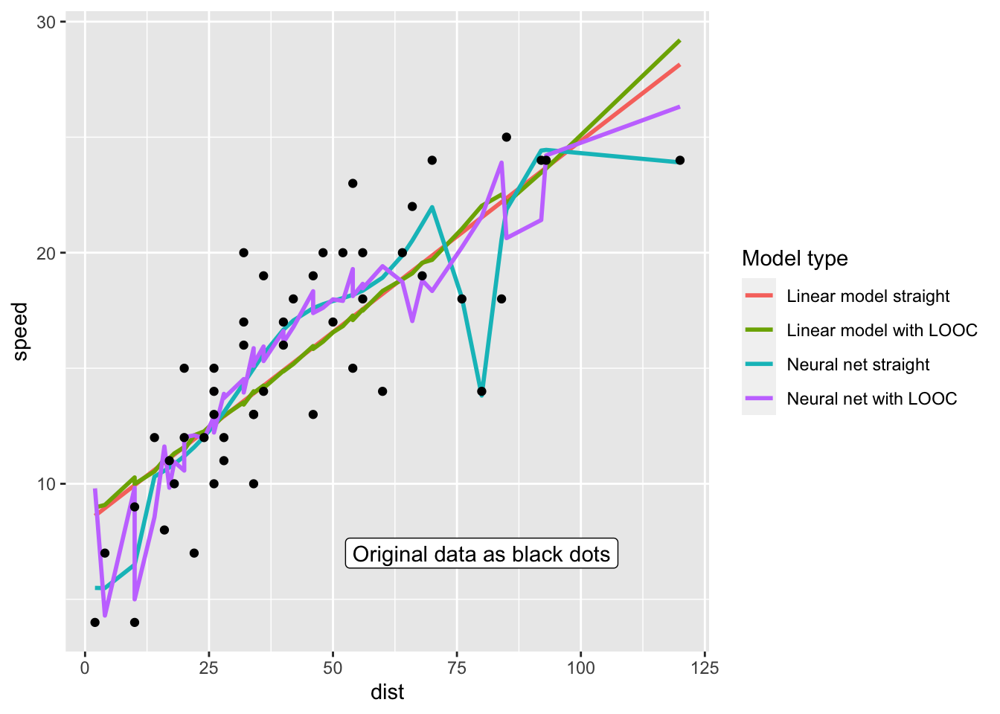

set.seed(123)
library('tidyverse')
library('knitr')
library('neuralnet')
update_geom_defaults("line", list(linewidth = 1))Leave-one-out cross-validation in R
R
Linear model vs neural nets
Strategy
- Fit “straight” models: linear model, neural net with 2 layers with 3 perceptrons each
- Perform “Leave-one-out-cross-validation”
- Calculate mean absolute prediction error and root mean squared error of the different methods
- In cross-validation case for the left-out data point
Implementation
leave_one_out <- Vectorize(
function(i, type) {
training <- cars[-i, ]
test <- cars[i, ]
if(type == 'lm') {
fm <- lm(speed ~ dist, data = training)
pp <- predict(fm, newdata = test)
} else {
fm <- neuralnet(speed ~ dist,
linear.output = TRUE, data = training,
hidden = c(3, 3),
stepmax = 1e+7, threshold = .5)
pp <- predict(fm, newdata = test)[, 1]
}
return(pp)
}, vectorize.args = 'i')fm_lm <- lm(speed ~ dist, data = cars)
fm_nn <- neuralnet(speed ~ dist,
linear.output = TRUE, data = cars,
hidden = c(3, 3),
stepmax = 1e+7, threshold = .5)
data <- tibble(
cars,
'Linear model straight' = predict(fm_lm),
'Neural net straight'= predict(fm_nn, newdata = cars)[, 1],
'Linear model with LOOC' = leave_one_out(1:nrow(cars), type = 'lm'),
'Neural net with LOOC' = leave_one_out(1:nrow(cars), type = 'nn')
)Predictions for straight models for all integers from 0 to 125
pred_df <- tibble(dist = 0:125)
pred_df <- pred_df |>
mutate('Linear model' = predict(fm_lm, pred_df),
'Neural net' = predict(fm_nn, pred_df)[, 1])
text_to_add <- tibble(dist = 80, value = 7, text = 'Original data as black dots')
pred_df |> pivot_longer(cols = -dist) |>
ggplot(aes(dist, value, colour = name)) + geom_line() +
geom_point(mapping = aes(dist, speed), data = cars, inherit.aes = FALSE) +
geom_label(aes(dist, value, label = text), data = text_to_add, inherit.aes = FALSE) +
labs(colour = 'Model type', y = 'speed')
Predictions for all dist values that are in the original data set as well
data |>
select(-speed) |>
pivot_longer(cols = -dist) |>
ggplot(aes(dist, value, colour = name)) +
geom_line(linewidth = 1) +
labs(y = 'speed', colour = 'Model type') +
geom_point(aes(dist, speed), cars, inherit.aes = FALSE) +
geom_label(aes(dist, value, label = text), data = text_to_add, inherit.aes = FALSE)
data_long <- data |>
pivot_longer(cols = -c(dist, speed))
data_long |>
mutate(error = value - speed,
squared_error = error^2) |>
rename(Method = 'name') |>
group_by(Method) |>
summarize('Mean absolute error' = mean(abs(error)),
'Rout mean squared error' = sqrt(mean(squared_error))) |>
kable(align = 'c', digits = 2)| Method | Mean absolute error | Rout mean squared error |
|---|---|---|
| Linear model straight | 2.52 | 3.09 |
| Linear model with LOOC | 2.63 | 3.24 |
| Neural net straight | 1.95 | 2.43 |
| Neural net with LOOC | 2.89 | 3.46 |
Conclusion
- The neural net seems to overfit!